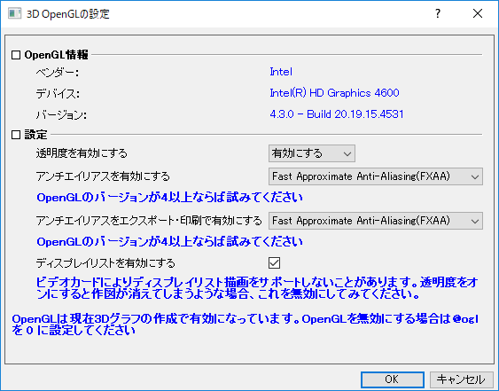
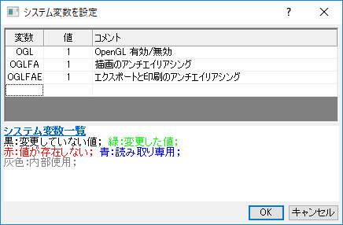

FAQ-918 OpenGLの3Dグラフの要件と制限は何ですか？
最終更新日：2022/8/22
OpenGL-3D-Requirements
Origin 9.0以降、全3Dグラフ、3D関数グラフ、3Dパラメトリック関数グラフはデフォルトでOpenGLで作図されます。これにより、高速な作図や回転、曲面のライト効果、新しいプロットタイプの追加といった機能が向上されました。
3D OpenGLの要件
OpenGLグラフは使用しているPCのハードウェア構成によるものです。最高のパフォーマンスを得るためにの推奨環境は以下の通りです。
- ATI Raedon™ Series 5400以上またはNVIDIA GeForce® 8400以上の専用グラフィックカード
- Intel® HD 3000以上の統合グラフィックハードウェア
- Macの場合、仮想化ソフトウェア: Parallels® 8.0以上
重要事項
- また、ビデオドライバを最新バージョンにアップデートして最新のOpenGLバージョンをハードウェアでアクセスできるようにすることもお勧めしています。このアップデートは、専用カードと統合カードの両方で実行できます。
- お使いのPCにディスプレイカードが2枚ある場合は、内蔵グラフィックスカードから専用グラフィックスカードに変更するなど、より良い方を使用するようにしてください。
- OpenGLの最高のパフォーマンスを確保するために、Windowsの設定でOriginソフトウェアに高いパフォーマンスを設定してください。操作の詳細は、このページを参照して下さい。
必要条件を満たさない場合
ハードウェア構成が推奨オプションより低い場合は、次の2つの選択肢があります。
3D OpenGL設定ダイアログを使用してOpenGLの設定をカスタマイズ
環境設定: 3D OpenGLの設定メニューを選択してOpenGL設定を編集できます。このダイアログでは、透明度やアンチエイリアシングなどのいくつかのOpenGL設定をオフにして問題をあらかじめ回避できます。
- 
OpenGL無効にする
環境設定: システム変数ダイアログを使って、ogl=0ｂに設定してOpenGLをオフにします。これ以降、全ての3Dグラフは以前のバージョンで使用していたOpenGLでない描画コードに変更できます。
- 
 |
便利なコマンド
- 3DグラフがOpenGLベースかどうかを判断するには
- グラフウィンドウをアクティブにして、layer.IS3DGL =を実行します。1が返された場合は、OpenGLベースです。0の場合、古い方法で作成されています（GDIベース）。
- GDIベースの3DグラフをOpenGLベースに変換するには：
- layer -3d c; //現在のレイヤーをOpenGLに変換する
- win -dg; //現在のグラフウィンドウを複製してOpenGLに変換する
サンプル１：
これは、以前のバージョンで生成されたOriginプロジェクトのすべてのGDIベースの3Dグラフ、またはシステム変数@ ogl
= 1が0の場合にOpenGLベースに変換する例です。
doc -e LP //全てのグラフウィンドウで実行
{
layer -3d c;//現在のレイヤをOpenGLに変更
}
サンプル2：
これは、現在のプロジェクトエクスプローラフォルダにあるOpenGLベースではないすべてのグラフウィンドウを複製してOpenGLベースに変換する例です。
doc -ef P //現在のフォルダ内のすべてのグラフオブジェクトに対して、指定したスクリプトを実行します
{
if(!layer.IS3DGL) // layer.is3dglは、現在のグラフが3次元グラフかどうかを判断するために使用されます。
{
win -dg; //現在のグラフウィンドウを複製してOpenGLに変換する
}
} |
キーワード:OpenGL